LearnAM
A mobile learning redesign for better access and adoption.
Redesigned the learning experience to make course discovery, progression, and completion easier for users.
View Case Study
A 72-hour design challenge
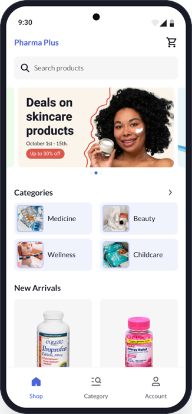
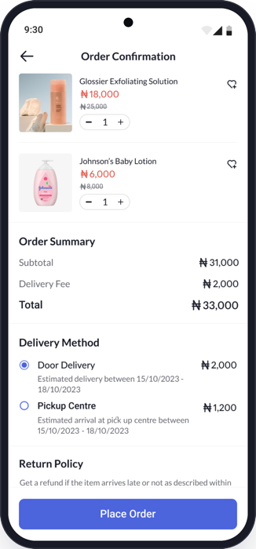
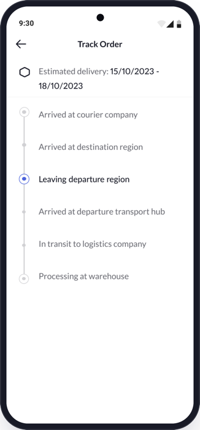
This project began as a take-home task during a hiring process for Product Designer at Heroshe. The brief described Pharma Plus, a large Nigerian e-commerce chain that sells pharmaceuticals and cosmetics. Customers outside Lagos, Abuja, and Port Harcourt couldn’t reliably get quality products from them. I had 72 hours to design an MVP that solved this, document my thinking, and choose the platform that best fit the solution.
I had no access to users or to Pharma Plus’s data, so everything here is based on desk research, a review of existing online pharmacy apps, and assumptions I’ve tried to state clearly. I got the role. I’m sharing the work mostly as it was submitted, with some notes at the end on what I’d do differently now.
The brief sounds like an app problem, but I read it as an access problem with three parts:
Only part of this can be solved with interface design. So I tried to design an app that works within the logistics and trust constraints, instead of assuming they’d already been solved.
I designed for an assumed user: someone living outside a major city, using a mid-range Android phone, with patchy or expensive data. They’ve bought things online occasionally or not at all, and they currently get medicine from a local chemist. They’d use Pharma Plus for products they can’t find locally or don’t trust locally, if ordering felt safe and delivery was realistic.
This is an assumption, not a research finding. Checking it would be the first thing to do with real users.
I focused the MVP on the smallest set of features that would let someone outside the big cities find a product, trust it enough to buy, and receive it:
Building regional warehouses was outside the scope of the MVP. That’s a business investment, and the realistic first step is partnering with local pharmacies as pickup points.
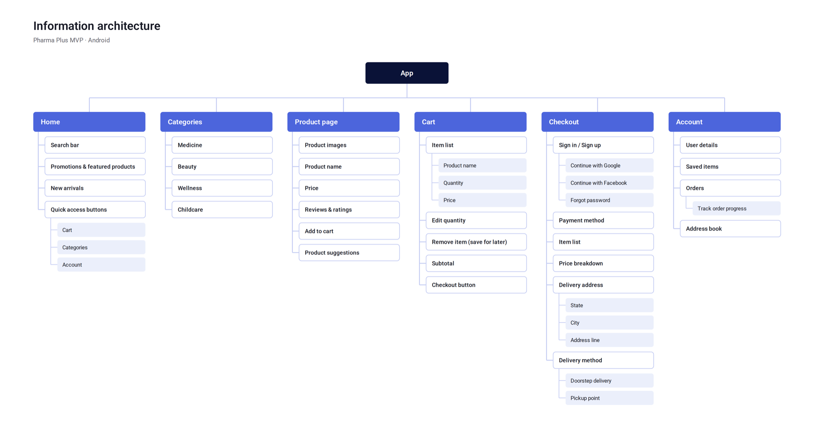
I chose an Android app for three reasons. Smartphones are the main way many Nigerians go online, and Android is by far the most common platform. A native app can store products and the cart locally, so people can keep browsing and adding items when their connection drops, and the app syncs when they’re back online. A mobile web version would have been easier to reach without installing anything, but it would handle weak connections less reliably, and connectivity was the constraint I was most worried about.
To keep the screens consistent within the 72 hours, I built a small design system: a type scale, a colour palette with a blue primary colour and three accent colours, a set of outline and filled icons for active states, and the core components the flows needed.
Some components came directly from the MVP decisions. Because bank transfer payments aren’t always confirmed right away, the orders screen has an “Unpaid” status alongside Processing and Delivered. Saved addresses can be set as the default so customers can switch between doorstep delivery and pickup. After payment, a clear confirmation screen tells first-time buyers that their order has gone through.
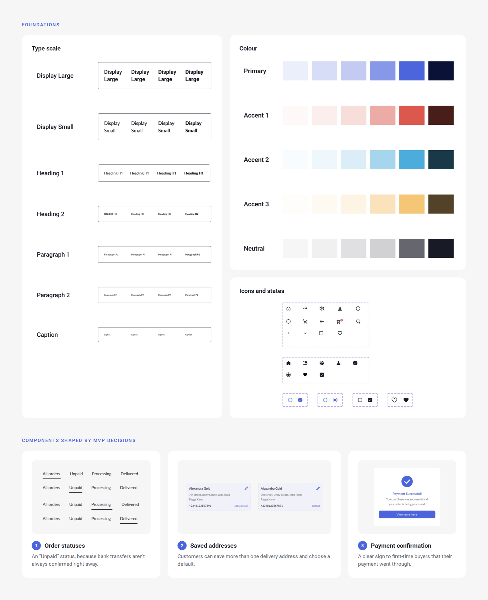
I grouped products into Medicine, Beauty, Wellness, and Childcare, which are broad and familiar categories. Someone new to online shopping can find what they need without searching through a long list
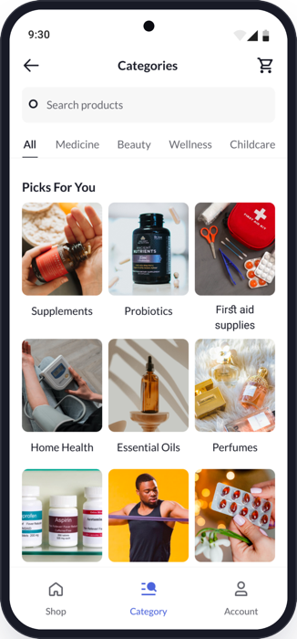
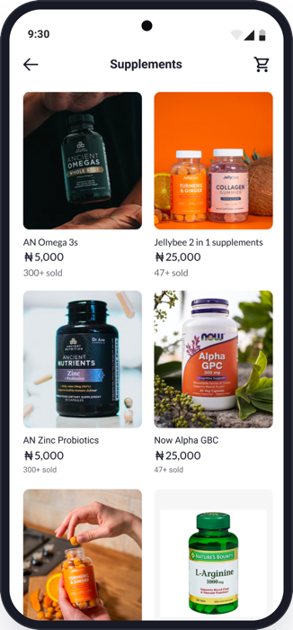
Popular categories, promotions, and new arrivals appear first, with quick-access shortcuts for frequent tasks. Each product page includes reviews and ratings, so first-time buyers can see what other customers experienced.
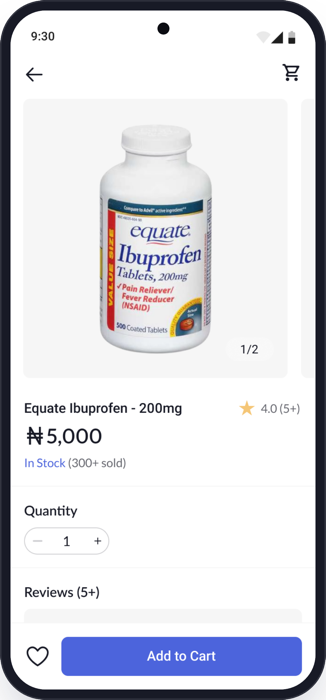
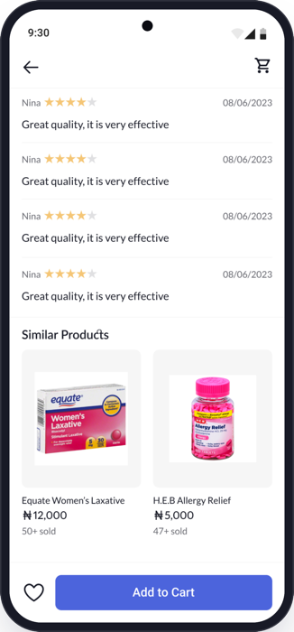
People can explore the store and add items to their cart without creating an account. Registration only happens at checkout. For someone unsure about shopping online, being asked to sign up immediately is a common reason to leave.
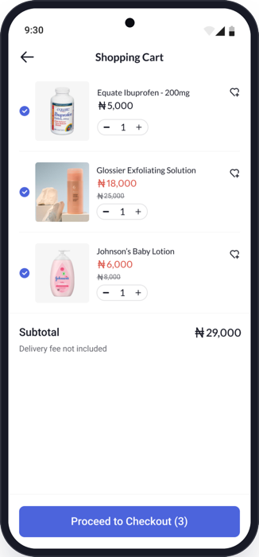
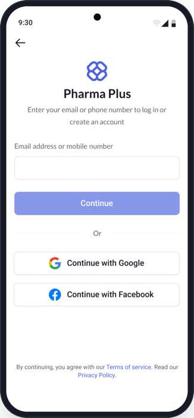
I offered card payment and bank transfer. Bank transfer matters because many people are more comfortable with it than entering card details in an app they don’t know.
Customers can choose doorstep delivery or collection from a nearby pickup point. The pickup option is what makes the service practical outside the cities, since it builds on local partners instead of long delivery routes.
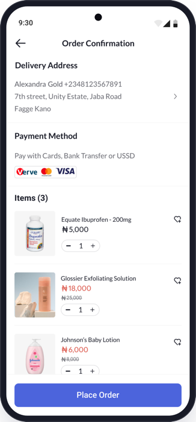
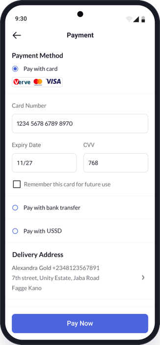
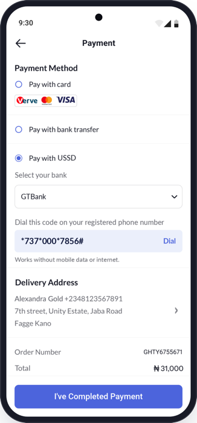
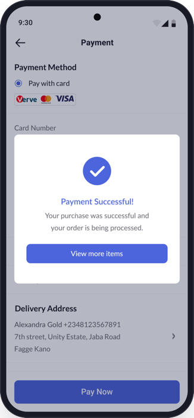
Longer deliveries cause anxiety, especially for a first order. Tracking shows customers where their order is at each stage.
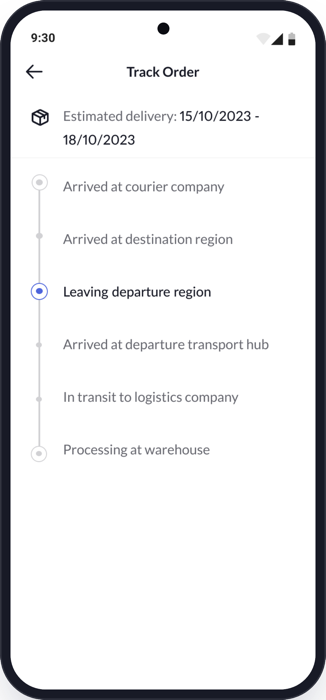
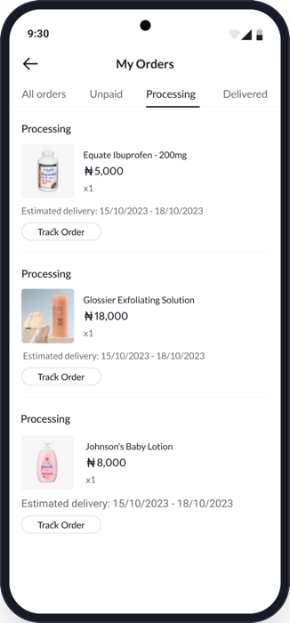
The brief didn’t include testing, but my next step would have been usability testing with people who match the assumed user. I’d want to know whether they could find and buy a product without help, whether the pickup option felt trustworthy, and what would stop them from placing their first order.
With a few more years of experience, here is what I would change:
LearnAM
A mobile learning redesign for better access and adoption.
Redesigned the learning experience to make course discovery, progression, and completion easier for users.
View Case Study